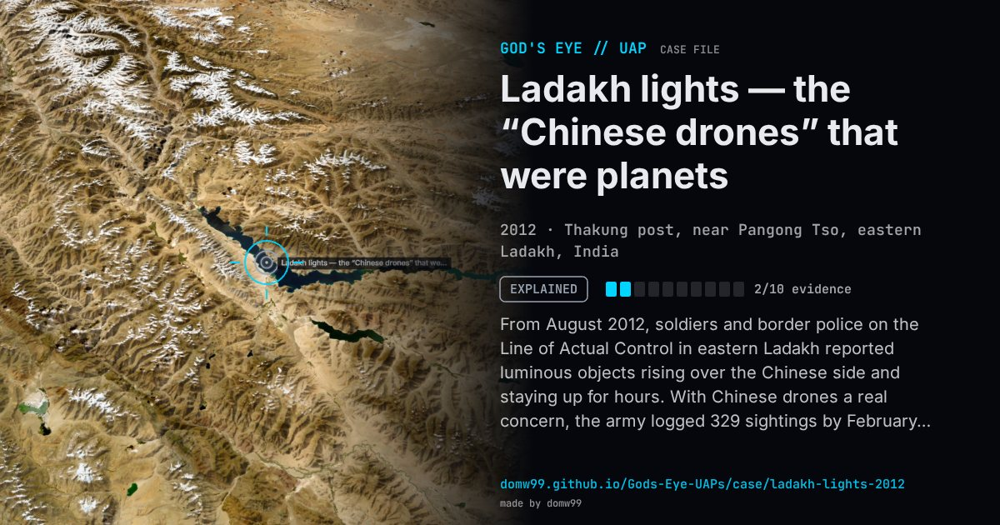

Ladakh lights — the “Chinese drones” that were planets

From August 2012, soldiers and border police on the Line of Actual Control in eastern Ladakh reported luminous objects rising over the Chinese side and staying up for hours. With Chinese drones a real concern, the army logged 329 sightings by February 2013 and counted 155 apparent violations of the border. At the army’s request, two astronomers from the Indian Institute of Astrophysics in Bengaluru travelled to Thakung, near Pangong Tso, and measured the objects with a theodolite: one was visible from about 6 p.m. to 5 a.m., the other from about 4 a.m., and they moved with the stars. They were Jupiter and Venus. A soldier’s note that one object rose about four minutes earlier every day, as a planet does, had already pointed the same way.
Explanation
Astronomers of the Indian Institute of Astrophysics, sent at the army’s request, identified the two brightest “objects” as Jupiter and Venus, made unusually bright by the altitude; their apparent motion was the sky turning. The defence minister told Parliament there was no conclusive proof of UFOs.
What was seen
Shape: Yellowish luminous spheres rising from the horizon on the Chinese side
Witnesses: Indian Army and Indo-Tibetan Border Police troops
Duration: August 2012 to February 2013; hours each night
Sources
- The Register — Indian army mistook Jupiter and Venus for Chinese spy drones (2013)
- IBTimes India — Army spends six months tracking “Chinese spy drones” that were planets (2013)
Browse
- India
- 2010s
- Explained
- Recurring lights
- Many independent witnesses
- Military witnesses
- Lights and fireballs
- Spheres and orbs